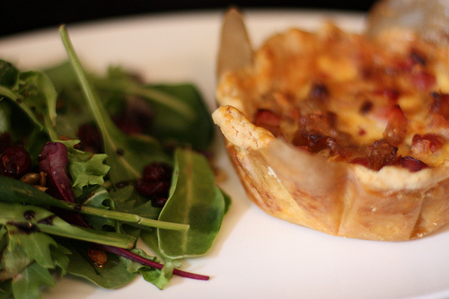
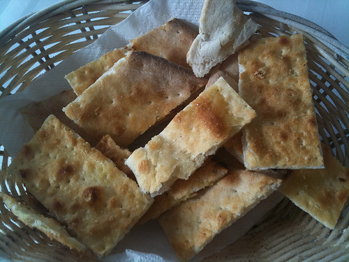

Other Recipes
- 
Quiche Toscana
Ham, Roasted Red Peppers, Caramelized Shallots and Parmesan

Cornetti al Cioccolato
Urnau ltrices quis curabitur pha sellent esque congue magnisve stib ulum quismodo nulla et.
- 
Schiacciatine
With provolone cheese, tomato, rucola, Toscan ham, aubergines, or just like you ask!
The Team
-

Pane (aka Fabio)
My name is Fabio and I welcome you in our small and humble place, where we try to preserve the good italian food traditions and share it in a welcoming place like the center of Amsterdam is. My family has a long trail of chiefs, all sharing the same love for simple, healthy and tasty food, mixing different origins and cultures. Pane & Olio is also the result of this mix of different kitchens, yet keeping a strong Toscan influence, where we directly import most of our products and ingredients and where still part of my heart is.
-

Olio (aka Paolo)
Hey there, welcome to our website! My name is Paolo and I'm normally hidden in the kitchen, making the dough, cooking the pasta and cleaning like hell; I'm a passionate chief coming from the farest tip of Puglia, a region full of excellent products and simple recipes, yet extremely tasty. During my time off I like to bike and to play soccer; I'm a simple guy and I enjoy to be surrounded by people, the more we are the better it is.